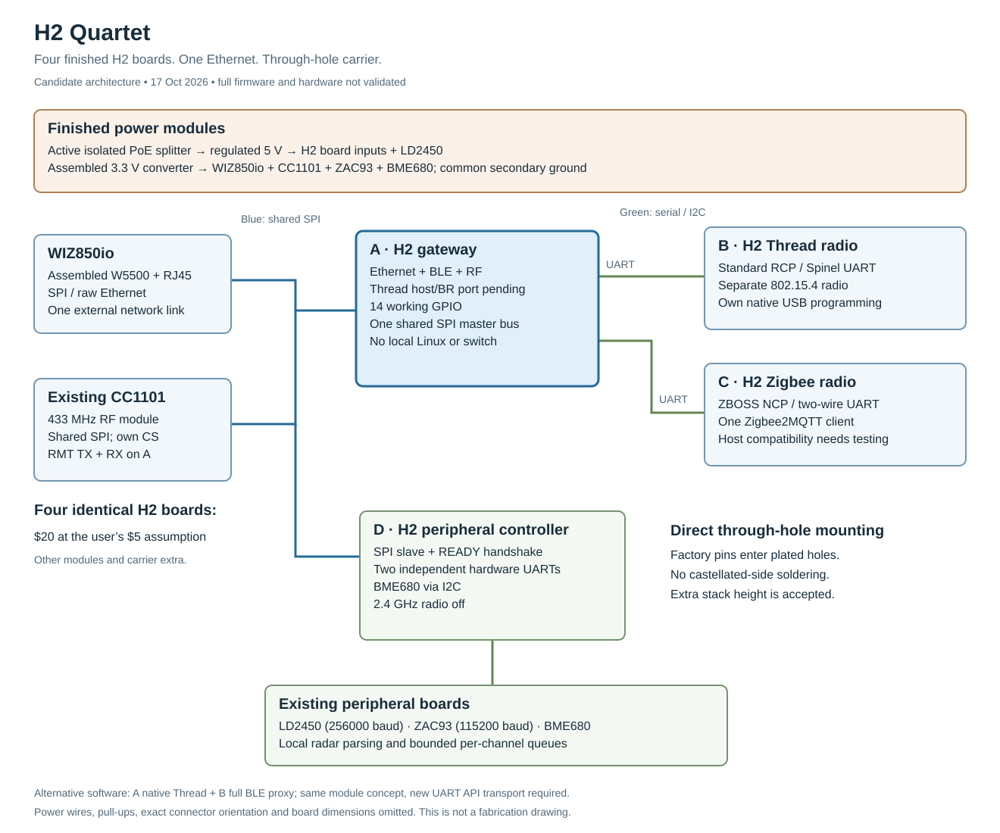
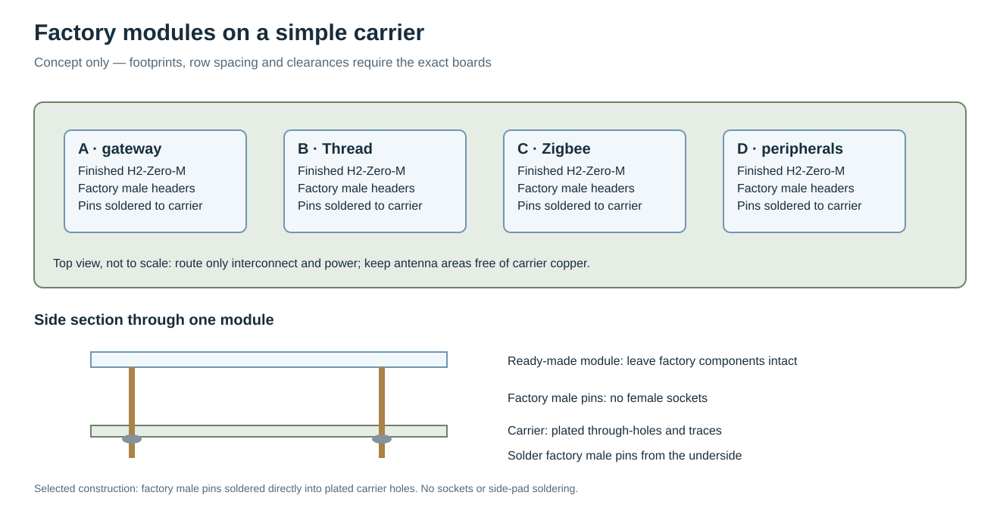

H2 Quartet: ready-made modules on a through-hole carrier
The main saving is assembly work: buy complete modules, insert their factory male pins directly into plated carrier holes, and solder from the underside. No female sockets. Extra height and custom firmware are acceptable.
17 October 2026 · architecture candidate · no complete hardware test or local H2 Thread BR build
Compare the implementation choices
4 H2 · module-first target
The fourth H2 connects as an SPI slave and gives both hardware UARTs to radar and Z-Wave. This removes SC16 and its support circuit. Gateway firmware remains the main development task.
$20 for H2 boards
At the user's $5 assumption. Other modules, carrier, connectors, shipping and taxes excluded. No measured power claim.

| ID | Role | Responsibility |
|---|---|---|
| A | Gateway | Ethernet, BLE, CC1101; Thread host/BR requires a port |
| B | Thread | Dedicated Thread RCP; UART to A |
| C | Zigbee | ZBOSS NCP; UART to A; experimental host integration |
| D | Peripherals | SPI slave; LD2450 + ZAC93 UARTs; BME680 I2C; radio off |
Alternative software can put native Thread on A and the complete BLE proxy on B. This reduces shared host memory but requires a new framed API transport; HCI alone does not move the BLE host stack off A.
No side-pad soldering

H2 board candidate: Waveshare ESP32-H2-Zero-M, SKU 32260, 4 MB, native USB, factory-fitted headers. The selected GPIO map leaves RGB LED, boot straps and USB untouched. Existing C0/I0 footprints cannot be reused unchanged.
Use a finished WIZ850io Ethernet module, assembled isolated active PoE splitter, assembled power converter and existing radio/sensor boards. A few pull-ups and a fuse may still be needed. Do not parallel the H2 boards' regulator outputs or tie USB power to the PoE splitter output.
Count the work the builder performs
| Existing board BOM | Capacitors | Resistors | Meaning |
|---|---|---|---|
| C0 + M0 | 20 | 18 | Manual component placements in the published assembly BOM |
| I0 | 44 | 35 | Alternative integrated build; do not add it to C0 + M0 |
| Quartet carrier target | Factory module decoupling | A few interface pull-ups if required | Through-hole connectors; final loose-part count pending selected module revisions |
Counts come from the committed assembly BOMs. Factory-installed parts still exist electronically; they are no longer the builder's SMD assembly task.
A real component build succeeded
H2 + W5500 + active ESPHome BLE proxy, three connection slots: linked with ESPHome 2026.9.1 / ESP-IDF 5.5.5. Static report: 106,302 / 258,000 bytes (41.2%). Application binary: 1,061,120 bytes.
This probe excludes Thread, Zigbee, RF, sensors, API encryption and OTA service. Its GPIOs are placeholders. No board was flashed and runtime free heap was not measured.
Reproduce the build and inspect exact hashes
Development gates
- Local Thread BR: ESP-IDF's public prebuilt BR library has no H2 target. Port the platform glue or evaluate the open Zephyr BR. Zephyr's existing ESP sample uses S3/PSRAM, so H2 remains an unverified port.
- Memory: measure heap and task stacks with the whole gateway running. A low static percentage for the small BLE probe is not full-system headroom.
- Zigbee: H2 ZBOSS firmware exists, but stock Z2M calls it experimental; test recovery on a spare H2. Current custom ZHA support has dependency incompatibilities.
- Shared SPI: implement ready/credits, bounded frames, per-channel queues and failure recovery; measure contention with W5500 and CC1101.
- Physical assembly: verify footprints, power transients and RF coexistence before ordering the carrier.
Candidate gateway GPIO map
| Signal | GPIO |
|---|---|
| spi_sclk | 4 |
| spi_mosi | 5 |
| spi_miso | 0 |
| w5500_cs | 1 |
| w5500_irq | 10 |
| cc1101_cs | 13 |
| cc1101_tx_gdo0 | 2 |
| cc1101_rx_gdo2 | 3 |
| peripheral_cs | 14 |
| peripheral_ready | 11 |
| radio_b_tx | 24 |
| radio_b_rx | 23 |
| zigbee_tx | 12 |
| zigbee_rx | 22 |
GPIO labels only. Two-wire Zigbee serial, no RTS/CTS. All 14 safe exposed GPIO are used. No fabrication pin numbering implied.